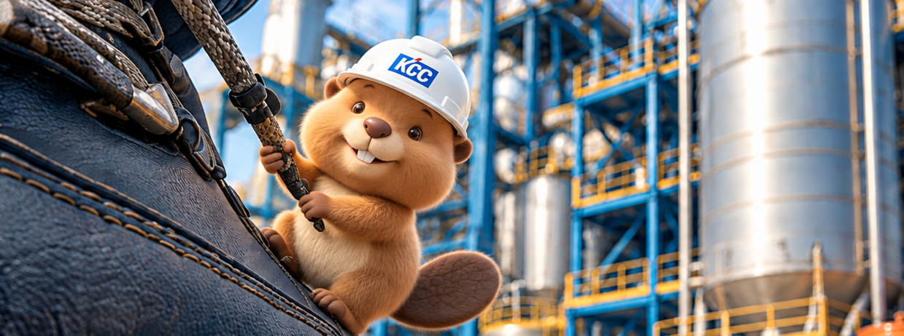
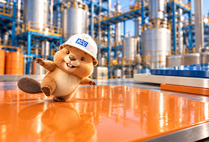
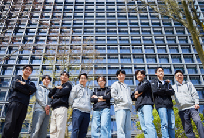
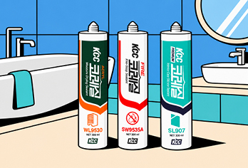
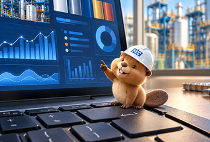
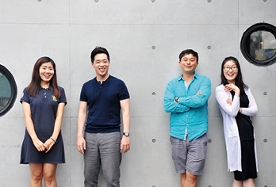
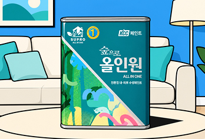
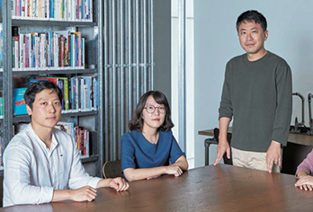

INSIDE 콘텐츠 목차

추천 콘텐츠 1 / 3
INSIDE
발행 연도
콘텐츠별

케비의 은밀한 출장
케비가 직접 가봤다!
KCC 생산 현장의 하루

팀캐를 찾아라
함께라서 더 강하다!
현장에서 찾은 팀워크

아묻따 KCC
알고 쓰면 더 놀라운
KCC 실리콘의 세계
우리회사 F5 위원회

케비의 은밀한 출장
데이터로 읽는 공장,
스마트한 현장의 비밀

팀캐를 찾아라
서로 다른 전문성,
하나의 목표로 뭉치다

아묻따 KCC
생활 속에서 발견한
KCC 친환경 제품 이야기
우리회사 F5 위원회

팀캐를 찾아라
세 사람의 경험이 만든
새로운 도전
해당 조건에 맞는 게시물이 없습니다. 전체 보기로 다른 이야기도 만나보세요.